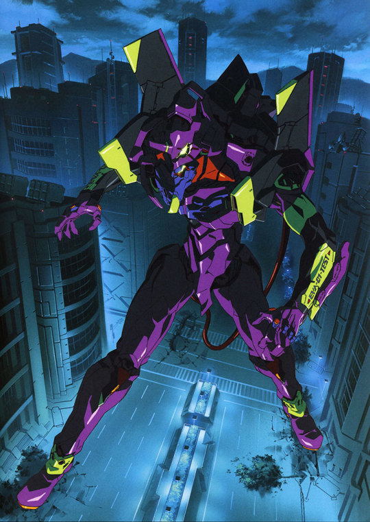

An Introduction to Vue.js
Josh Thomas / @jthoms1

What is Vuejs?
Vue is a progressive framework for building user interfaces. Unlike other monolithic frameworks, Vue is designed from the ground up to be incrementally adoptable. The core library is focused on the view layer only.
About the Project
- Began in 2013, Open sourced in Feb 2014
- Initially inspired by AngularJS
- Created by Evan You Full Time!
- Excellent trajectory
- Huge in China
- Less opinionated, more options and tools
Interesting Fact
- Vue.js 1.0 was named Evangelion
- Vue.js 2.0 was named Ghost in the Shell

How does it compare to X?
- Component Composition
- Utilizes VDOM but without JSX unless you want it
- Custom Directives, Form Bindings
- Scoped CSS out of the box
- Has a CLI / Heavy reliance on Webpack
- Server side rendering
Single File Components
CSS + Template + JS in one file (.vue)
{{ greeting }} World!
Templating and Reactivity
-
Change detection with Javascript Objects
https://jsfiddle.net/jthoms1/6eq3yt0f/
-
Computed Properties
https://jsfiddle.net/jthoms1/c1uarzuo/
-
Watchers
https://jsfiddle.net/jthoms1/4rgb319h/
Templating
-
Conditional Rendering
https://jsfiddle.net/jthoms1/86xnkh6j/
-
List Rendering
https://jsfiddle.net/jthoms1/spwfbykf/
-
Event Handling
https://jsfiddle.net/jthoms1/mgorydkj/ -
Form Input Bindings
https://jsfiddle.net/jthoms1/pnnyjjf1/
Batteries included
- Vuex - Redux for Vue.js Apps
- Vue Router
My Experience
- Documentation and Examples are TOP NOTCH
- Most productive day 1 experience I have ever had
- Really well designed
Adopting Vue.js
- Use all of Vue or Just the view layer
- If you don't like the template syntax write JSX
- Single File Components not your jam. Don't use them
- Starting an Angular project? Maybe try Vue.js its any easy sell.